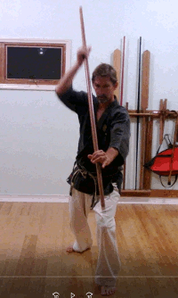

David Hayes was born in New York in 1958, his family moved to Cleveland, Ohio, where they lived until 1969, when they moved to Muskegon, MI.
The new kid in school, he found himself having to fight many of the students at the school. This was also a time of rising racial tensions in the area.
Feeling the lack of security, David began the study of Martial Arts at Muskegon Community College under Ernest Lieb in March of 1972. Sensei Lieb was the best instructor to be found, with very good credentials.
He was the founder of the American Karate Association and the American Karate System which was the first American style of Karate. Sensei Lieb was awarded the Man of the Year award from Black Belt Magazine, which is the highest
honor that can be received in the U.S.A. Sensei Lieb was also one of the top fighters in the U.S. and passed much of his knowledge on to Sensei Hayes.
Sensei Hayes received his Black Belt in the A.K.S. in 1975 at the age of 16 to become the youngest person to receive that rank in the history of the A.K.S. The style does not allow Black Belt rank until the age of 18.
Sensei Lieb broke the rules for Mr. Hayes because he saw the talent, dedication, and maturity that he would need to hold the rank. Sensei Hayes proved his instructor made the right choice by winning the Black Belt division in the
American Karate National Tournament that same year as a 16 year old. Sensei Hayes went on to win the Nationals 4 more times. He placed in over 150 other tournaments, was rated in Karate Illustrated Magazine #3 in fighting and
#1 in Kata in the Midwest. He was one of the winners of the first "Michigan Top Fighter" award from the Michigan Karate Circuit.
Sensei Hayes, having met his own goals in tournament competition, and receiving a 5th degree Black Belt in the American Karate System, went seeking more knowledge and a more traditional style which would feed his hunger for knowledge.
He found Tadashi Yamashita whom he first met in 1973 in South Bend, Indiana. Sensei Hayes spoke with Sensei Yamashita in Grand Rapids, MI and asked to study his style, Kobayashi Shorin-Ryu.
Sensei Yamashita took Mr. Hayes as a student, and with his instruction, and the help of Sensei Babis Polychronopolis, Sensei Hayes currently holds a ninth-degree Black Belt in Shorin-Ryu and a 7th degree Black Belt in Yamashita-Matayoshi Kobudo.
Sensei Hayes through his school the Michigan Suibukan, and branch club in West Virginia, is dedicated to supporting Sensei Yamashita as our Chief Instructor, and is dedicated to the advancement of Okinawan Karate-Do in the
State of Michigan, and believes that through karate training many people, especially here in the United States with the fast paced lifestyles and many broken homes, can benefit from the philosophy and culture taught in Karate.